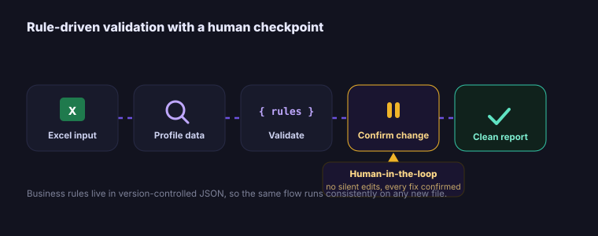

AI-Accelerated Data Validation Pipeline
An LLM-assisted, end-to-end cleaning and validation pipeline built with Claude Code that standardises data quality across datasets, profiling an Excel file against JSON business rules, then validating, transforming and reporting with a human checkpoint before any change.

End-to-end lifecycle
- Business Problem
Manual data cleaning and validation was slow, inconsistent and error-prone, and quality rules lived in people's heads rather than anywhere auditable.
- Business Context
Teams needed standardised, repeatable, auditable data quality without spending hours per file, and without automation silently corrupting data.
- Data Sources
Arbitrary Excel files plus a JSON definition of the business rules they must satisfy.
- Data Engineering / ETL
The pipeline profiles each column (types, ranges, nulls, distributions), then proposes and applies transformations once confirmed.
- Data Modeling
Rules-as-config in JSON, required fields, formats, allowed values, thresholds, kept transparent and version-controlled.
- Analytics & Statistical Analysis
Validation checks produce a clear list of violations with severity and location, so issues are triaged not guessed.
- Visualization & Reporting
Outputs a clean dataset plus a validation report documenting exactly what was checked, found and changed.
- Machine Learning / AI
Built with Claude Code (LLM-assisted), with a deliberate human-in-the-loop confirmation step before any change is applied.
- Business Impact
Cut manual data prep to near zero while keeping a human in control, and standardised quality enforcement across every dataset it touches.
- Lessons Learned
Human checkpoints keep AI automation trustworthy; rules-as-config make the same pipeline portable to new files without rewrites.